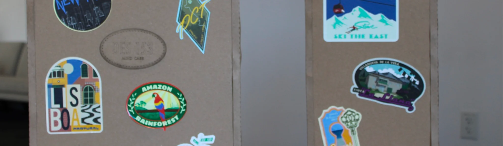
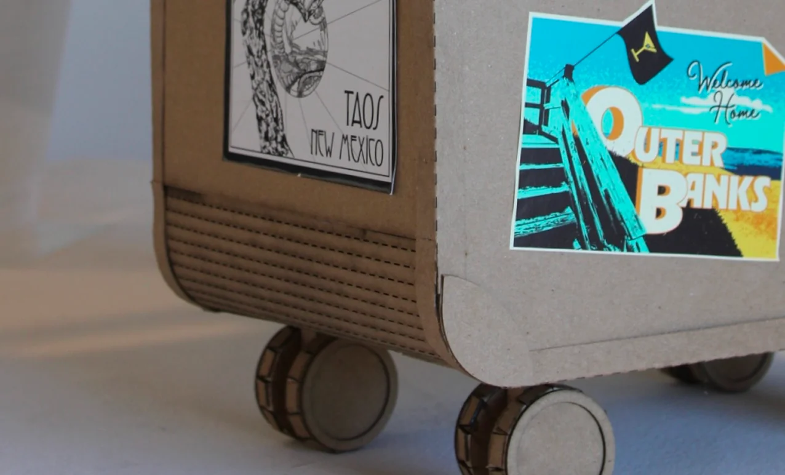
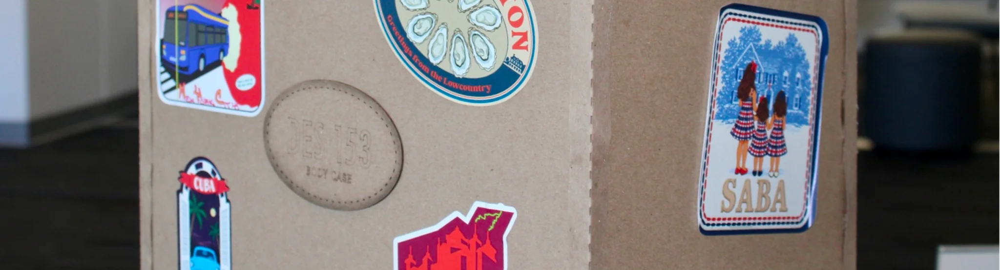
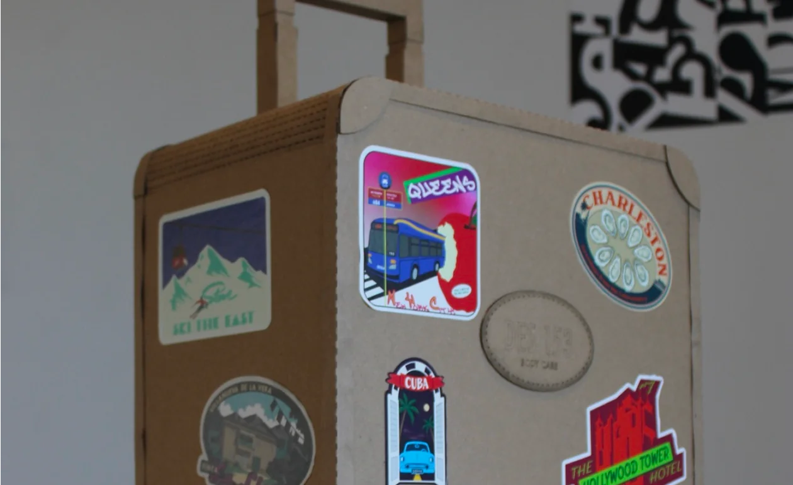
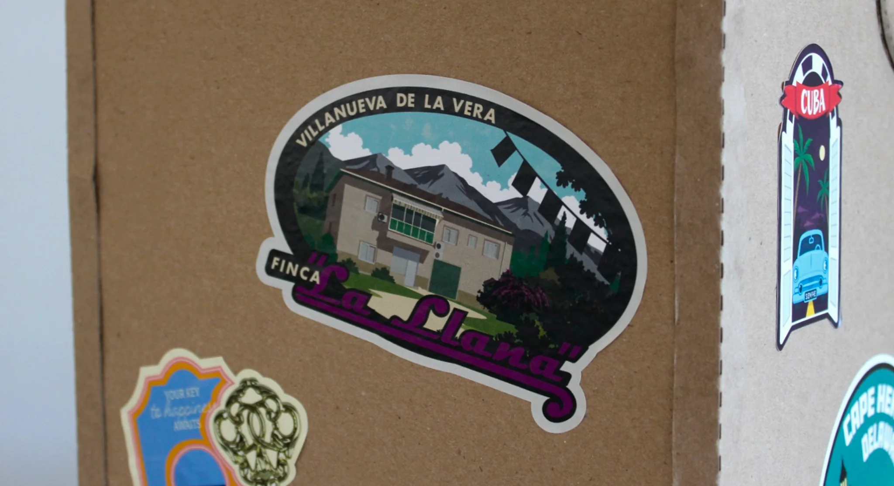
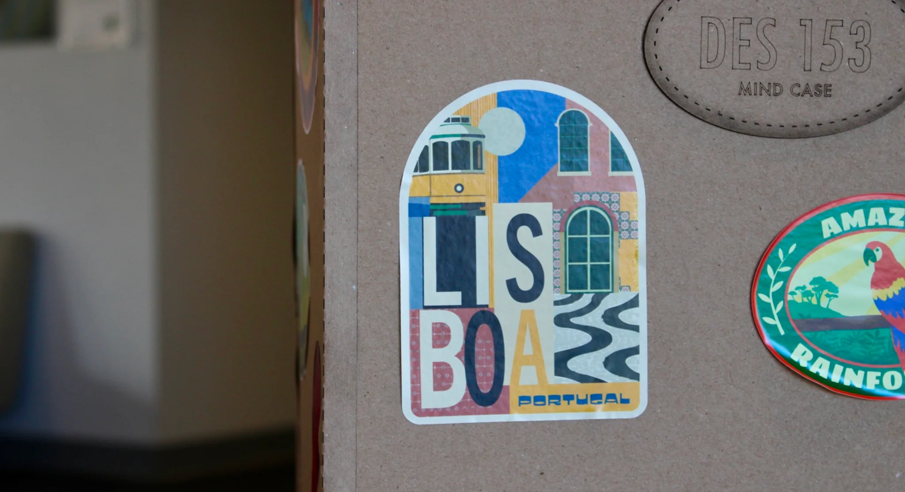
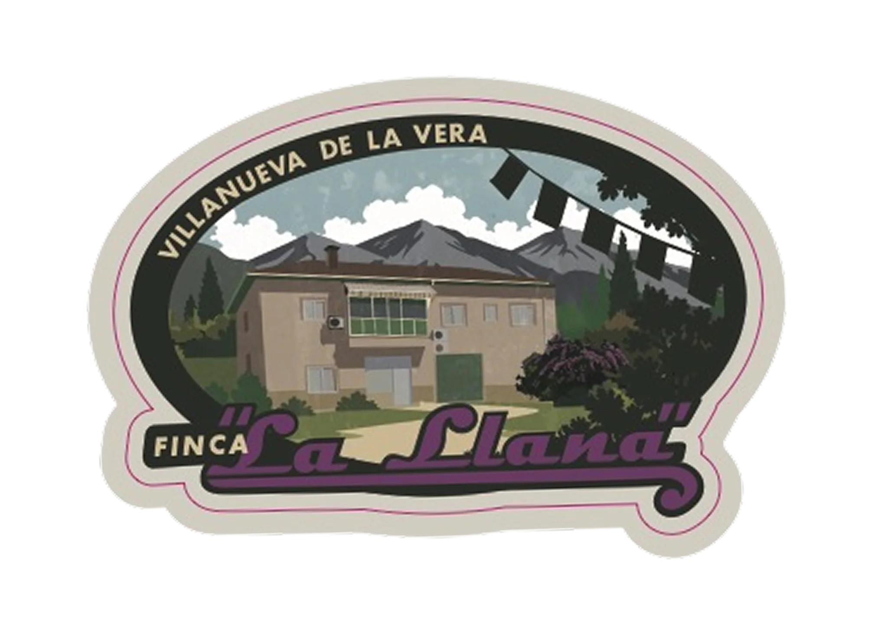
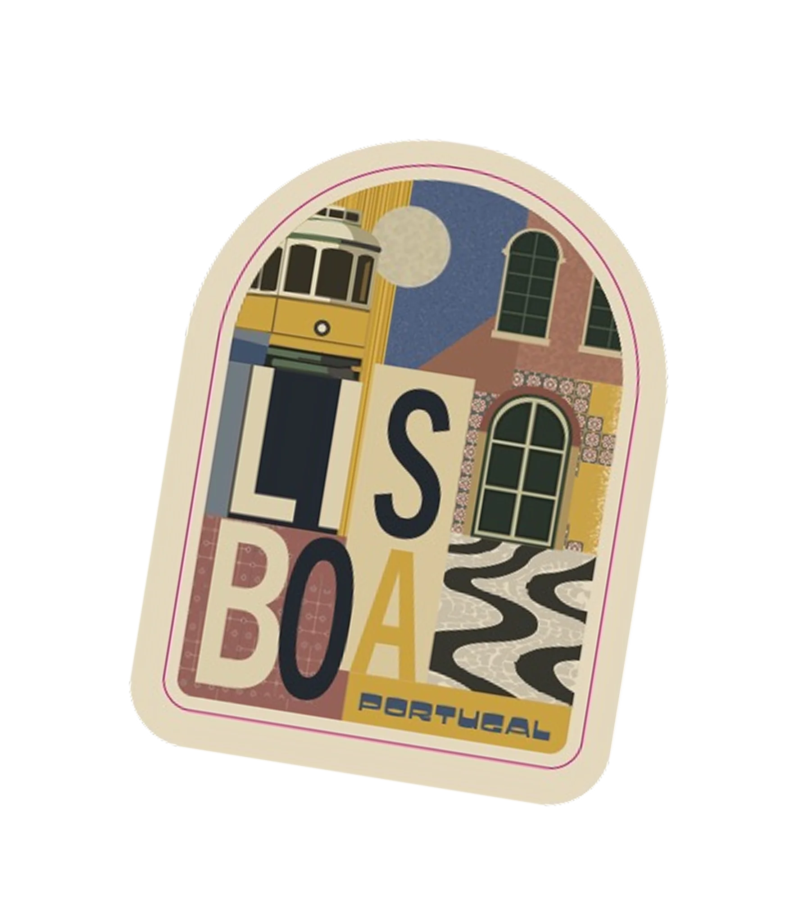

LUGGAGE TAGS
2026




PLACES WE CARRY WITH US
Inspired by the golden age of hotel and steamer-trunk labels, this project explores how travel stickers can represent more than just destinations. Two designs were created: one reflecting a place I've physically been, and another representing a place my mind has traveled.
Using vintage-inspired typography, illustrations, and framing, the stickers translate personal connections and ideas into small pieces of visual storytelling. They were then applied to handmade luggage for an exhibition in Lehigh's Art, Architecture, and Design Gallery.
BODY, WHERE I'VE BEEN

MIND, WHERE MY MIND'S BEEN

DETAILS
MEDIUM
Adobe Illustrator
Sticker Vinyl
DIMENSIONS
Up to 5 x 5 in per sticker


FROM LABEL TO LUGGAGE
Designed to accompany the handmade suitcase, the stickers add a personal layer to its chipboard construction. What began as a structural object becomes a surface for storytelling, connecting the physical luggage to the places and ideas represented by its labels.